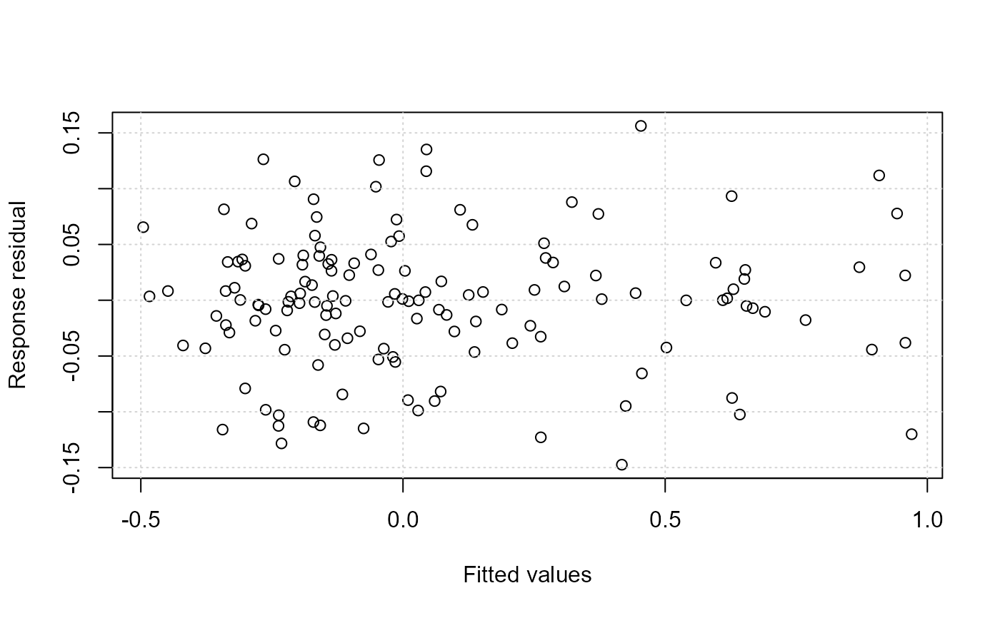

Diagnostic Plots for additive partial linear models with symmetric errors
Source:R/aplms.diag.plot.R
aplms.diag.plot.RdDiagnostic Plots for additive partial linear models with symmetric errors
Arguments
- model
an object with the result of fitting additive partial linear models with symmetric errors.
- which
an optional numeric value with the number of only plot that must be returned.
- labels
a optional string vector specifying a labels plots.
- iden
a logical value used to identify observations. If
TRUEthe observations are identified by user in the graphic window.- ...
graphics parameters to be passed to the plotting routines.
Value
Return an interactive menu with eleven options to make plots. This menu contains the follows graphics: 1: Response residuals against fited values. 2: Response residuals against time index. 3: Histogram of Response residuals. 4: Autocorrelation function of response residuals. 5: Partial autocorrelation function of response residuals. 6: Conditional quantile residuals against fited values. 7: Conditional quantile residuals against time index. 8: Histogram of conditional quantile residuals. 9: Autocorrelation function of conditional quantile residual. 10: Partial autocorrelation function of conditional quantile residuals. 11: QQ-plot of conditional quantile residuals.
Examples
data(temperature)
temperature.df = data.frame(temperature,time=1:length(temperature))
model<-aplms::aplms(temperature ~ 1,
npc=c("time"), basis=c("cr"),Knot=c(60),
data=temperature.df,family=Powerexp(k=0.3),p=1,
control = list(tol = 0.001,
algorithm1 = c("P-GAM"),
algorithm2 = c("BFGS"),
Maxiter1 = 20,
Maxiter2 = 25),
lam=c(10))
aplms.diag.plot(model, which = 1)
#> Registered S3 method overwritten by 'rmutil':
#> method from
#> plot.residuals psych
